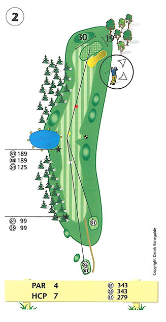
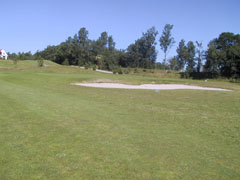

<div class="pages">
  <div data-page="hul2" class="page navbar-fixed toolbar-fixed" >
    <div class="navbar">
      <div class="navbar-inner">
        <div class="left">
          <a href="#" class="link back icon-only"><i class="icon icon-back"></i></a>
          <!-- <a href="#" class="back link icon-only"><i class="icon icon-back"></i></a> -->
        </div>
        <div class="center">Hul 2</div>
        <!-- <div class="right"></div> -->
        <div class="right">
        </div>
      </div>
    </div>
    <div class="page-content" style="padding-top:45px;">
       <div class="content-block">
          <center></center>
          <p>Par 4 hul med svagt dog-leg til højre, god plads og rimelig længde. Hullets ubestridte udfordring er den strategisk placerede bunker ved green. Dette betyder at du bør prøve at placere dit udslag i venstre side af fairway, dog uden at bringe den lille sø i spil. Alt for lange indspil til green er i fare for out of bounds eller at havne i den lille skov bag green.</p>
          <center></center>
          <p>Green ser umiddelbart ganske tilforladelig ud, men giv dig god tid til at læse denne drilske green før du putter.</p>
          <p>For lav-handicapperen bør drivet placeres, så du har ca. 100 meter tilbage, hvorved pinden kan angribes, også når denne er placeret umiddelbart bag bunkeren. Hvis din bold er på green, kan du med fordel efterlade din bag i nærheden at 3. huls gule tee.</p>
          <p>Hulsponsor: <br />
          - LEDIGT - <br /><br />
          Bænksponsor:<br />
          - Ingen bænk -<br />
          <br />
          </p>
        </div>
    </div>
    </div>
    </div>
  </div>
</div>
